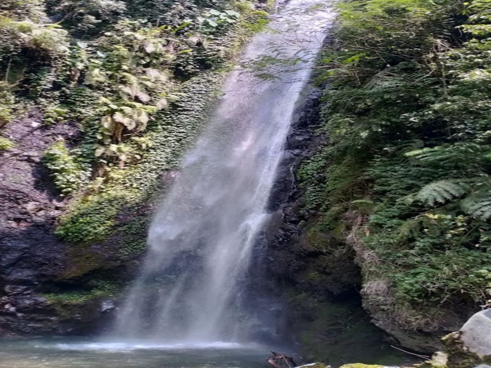

About Me
Manusia baik dibalik pembuatan web ini.
Web ini dikerjakan oleh orang-orang yang masih dalam tahap pembelajaran.Jadi maklumin kalau ada salah dalam perkataan dan perbuatan semoga kita diberi limpah nikmat yang besar oleh Allah.SWT.

Air Terjun Kakek Bodo adalah sebuah air terjun yang terletak di kawasan wilayah Tretes Kecamatan Prigen. Air terjun ini berada di ketinggian 850 mdpl dan memiliki terjunan air sekitar 40 meter yang termasuk dalam kawasan hutan lindung di RPH Prigen, BKPH Lawang Barat, KPH Pasuruan. Air Terjun Kakek Bodo ini dikelilingi oleh bebatuan dan pepohonan, nuansa hutan yang sejuk dan rindang sangat terasa nyaman ketika mengunjungi tempat wisata ini.
Air Terjun Kakek Bodo ada di lereng Gunung Welirang, Kelurahan Pecalukan, Kecamatan Prigen, Kabupaten Pasuruan, Jawa Timur. Ada tiga rute yang bisa Anda pilih: lewat Taman Safari, lewat Candi Jawi, atau lewat rute di belakang Hotel Surya. Dua rute pertama adalah rute yang biasa dipilih wisatawan. Namun, kalau Anda ingin sambil jalan-jalan dan melihat pemandangan alam yang cantik di Jawa Timur, Anda bisa pilih rute belakang hotel Surya. Biasanya rute ini juga dipilih para pendaki gunung Arjuno dan Welirang.
Wisata ke air terjun kakek bodo adalah pengalaman yang bisa Anda nikmati bersama keluarga. Karena
letaknya di tengah hutan, sudah tentu pasti pemandangannya asri dan memukau.
Saat Anda berjalan menuju air terjun dari gerbang, Anda akan bisa merasakan sendiri panorama
indah dan suasananya yang sejuk. Kalau Anda datang lewat loket 1, Anda bisa dapat pemandangan
yang paling indah.
Dari loket ini, jarak ke air terjun cuma 1 km saja. Rasanya tidak seperti berjalan biasa. Anda
justru seperti sedang berpetualang di tengah hutan. Lingkungan hutan yang masih murni ini
benar-benar terjaga keasriannya.
Di bawah air terjunnya, ada sebuah kolam alami yang dalamnya bisa sampai lima meter. Di
sekeliling kolam ini, ada banyak batu sungai yang licin dan besar. Nah, Anda bisa bermain di
kolam cantik ini.
Bisa berenang atau sekadar main air. Namun hati-hati, kolam ini sangat dalam. Kalau tidak bisa
berenang, Anda bisa duduk santai di atas batu-batunya.

Air Terjun Kakek Bodo adalah destinasi wisata alam yang menarik. Keindahan alamnya yang memukau, suasana yang tenang, dan aktivitas yang menarik menjadikannya tempat yang ideal untuk menikmati keindahan alam yang alami. Jika mencari tempat untuk bersantai, menikmati alam, dan melepaskan diri dari kehidupan sehari-hari, Air Terjun Kakek Bodo adalah pilihan yang sempurna.
Hasil dari riset kami mengenai beberapa tempat wisata yang menarik dan ikonik dari Pasuruan.
Manusia baik dibalik pembuatan web ini.
Web ini dikerjakan oleh orang-orang yang masih dalam tahap pembelajaran.Jadi maklumin kalau ada salah dalam perkataan dan perbuatan semoga kita diberi limpah nikmat yang besar oleh Allah.SWT.